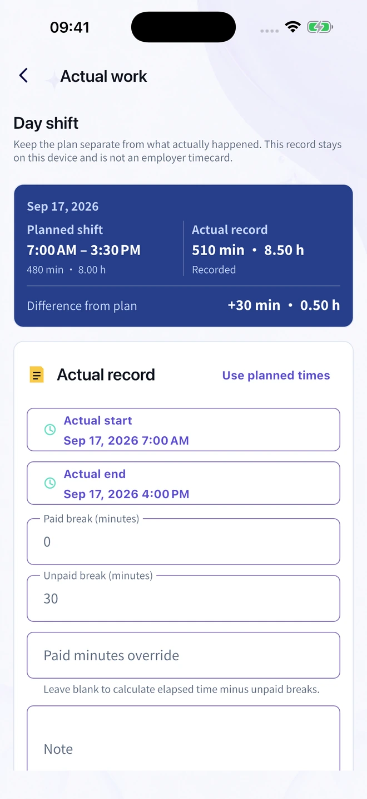
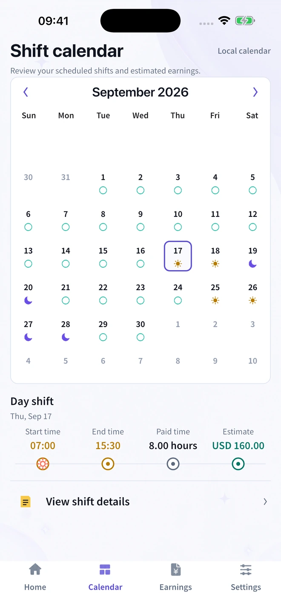
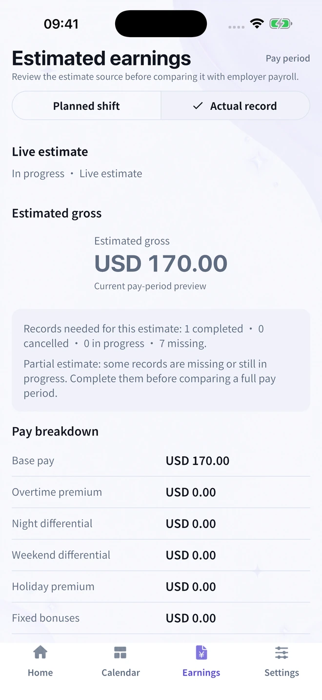

Build your shift pattern
Set up day shifts, nights and days off. Use a repeating rotation to put your schedule on the calendar.
For life on shifts
Finished late or took a shorter unpaid break? Keep the original schedule and record what actually happened.
For iPhone & iPad · Free to download · Optional Pro

One shift. Two useful records.
A longer shift should not erase what you were originally scheduled to work.
Planned shift
07:00–15:30
8 hours
Actual work
07:00–16:00
8.5 hours
Illustrative example. Extra recorded time is not automatically paid overtime.
A routine that fits your shifts
From your repeating pattern to the shift that ran late, keep the details together.
Set up day shifts, nights and days off. Use a repeating rotation to put your schedule on the calendar.
Add actual start and finish times and unpaid breaks. Your original plan stays separate from your actual record.
Check the estimate source and recorded hours. See when actual records are missing before comparing a pay period.
The weeks ahead
See upcoming shifts and days off in your calendar, including patterns that run beyond a single week.

The hours behind the number
Review planned or actual hours. A partial estimate stays clearly marked when records are missing.
Gross estimates are before tax and deductions. Rostivio is not an employer timecard or payroll system.

Useful, even before you download
A practical way to record late finishes and different breaks while preserving your original schedule.
Read the guideKeep the dates, finish time and unpaid breaks clear when your workday spans two calendar days.
Read the guideMatch the pay period, hours and gross figures first. Keep take-home pay and deductions separate.
Read the guideA personal record means personal
Record your shifts on your device. No need to send your work schedule or payslip to this website.
Read the Privacy NoticeReady for your next shift
Start with shift planning, manual actual-hour records and basic gross estimates. Optional Pro adds advanced pay rules, exports and widgets.